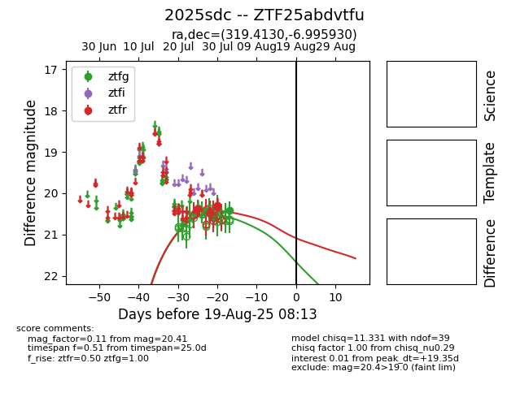

Target 2025sdc at 2025-08-19 09:59, see:
FINK: fink-portal.org/ZTF25abdvtfu
Lasair: lasair-ztf.lsst.ac.uk/objects/ZTF25abdvtfu
ALeRCE: alerce.online/object/ZTF25abdvtfu
TNS: wis-tns.org/object/2025sdc
YSE: ziggy.ucolick.org/yse/transient_detail/2025sdc
alt names
ZTF25abdvtfu (ztf,fink)
2025sdc (tns,yse)
coordinates:
equatorial (ra, dec) = (319.4130,-6.99593)
galactic (l, b) = (44.3583,-35.56634)
photometry
last ztfg=20.41, ztfr=20.34
2 ztfg, 3 ztfr detections
